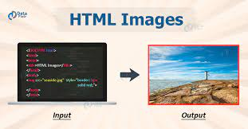

An HTML file is a text file, so to create an HTML file we can use any text editors.
Text editors are the programs which allow editing in a written text, hence to create a web page we need to write our code in some text editor.
There are various types of text editors available which you can directly download, but for a beginner, the best text editor is Notepad (Windows) or TextEdit (Mac).
After learning the basics, you can easily use other professional text editors which are, Notepad++, Sublime Text, Vim, etc.
Tags: An HTML tag surrounds the content and apply meaning to it. It is written between brackets.
Attribute: An attribute in HTML provides extra information about the element, and it is applied within the start tag. An HTML attribute contains two fields: name and value.
Elements: An HTML element is an individual component of an HTML file. In an HTML file, everything written within tags are termed as HTML elements.
HTML tags are like keywords which defines that how web browser will format and display the content. With the help of tags, a web browser can distinguish between an HTML content and a simple content. HTML tags contain three main parts: opening tag, content and closing tag. But some HTML tags are unclosed tags.
When a web browser reads an HTML document, browser reads it from top to bottom and left to right. HTML tags are used to create HTML documents and render their properties. Each HTML tags have different properties.
An HTML file must have some essential tags so that web browser can differentiate between a simple text and HTML text. You can use as many tags you want as per your code requirement.
HTML attributes are special words which provide additional information about the elements or attributes are the modifier of the HTML element.
Each element or tag can have attributes, which defines the behaviour of that element.
Attributes should always be applied with start tag.
The Attribute should always be applied with its name and value pair.
The Attributes name and values are case sensitive, and it is recommended by W3C that it should be written in Lowercase only.
You can add multiple attributes in one HTML element, but need to give space between two attributes.
An HTML file is made of elements. These elements are responsible for creating web pages and define content in that webpage.
An element in HTML usually consist of a start tag, close tag and content inserted between them. Technically, an element is a collection of start tag, attributes, end tag, content between them.
HTML Formatting is a process of formatting text for better look and feel. HTML provides us ability to format text without using CSS. There are many formatting tags in HTML. These tags are used to make text bold, italicized, or underlined. There are almost 14 options available that how text appears in HTML and XHTML.
In HTML the formatting tags are divided into two categories:
*Physical tag: These tags are used to provide the visual appearance to the text.
*Logical tag: These tags are used to add some logical or semantic value to the text.
HTML img tag is used to display image on the web page. HTML img tag is an empty tag that contains attributes only, closing tags are not used in HTML image element.
The src and alt are important attributes of HTML img tag. All attributes of HTML image tag are given below.

It is a necessary attribute that describes the source or path of the image. It instructs the browser where to look for the image on the server.
The location of image may be on the same directory or another server.
The alt attribute defines an alternate text for the image, if it can't be displayed. The value of the alt attribute describe the image in words. The alt attribute is considered good for SEO prospective.
It is an optional attribute which is used to specify the width to display the image. It is not recommended now. You should apply CSS in place of width attribute.
It h3 the height of the image. The HTML height attribute also supports iframe, image and object elements. It is not recommended now. You should apply CSS in place of height attribute.
You have learnt about how to insert an image in your web page, now if we want to give some height and width to display image according to our requirement, then we can set it with height and width attributes of image.
An HTML form is a section of a document which contains controls such as text fields, password fields, checkboxes, radio buttons, submit button, menus etc.
An HTML form facilitates the user to enter data that is to be sent to the server for processing such as name, email address, password, phone number, etc. .
HTML forms are required if you want to collect some data from of the site visitor.
For example: If a user want to purchase some items on internet, he/she must fill the form such as shipping address and credit/debit card details so that item can be sent to the given address.
HTML layouts provide a way to arrange web pages in well-mannered, well-structured, and in responsive form or we can say that HTML layout specifies a way in which the web pages can be arranged. Web-page layout works with arrangement of visual elements of an HTML document.
Web page layout is the most important part to keep in mind while creating a website so that our website can appear professional with the great look. You can also use CSS and JAVASCRIPT based frameworks for creating layouts for responsive and dynamic website designing.
You can use the following methods to create multicolumn layouts: